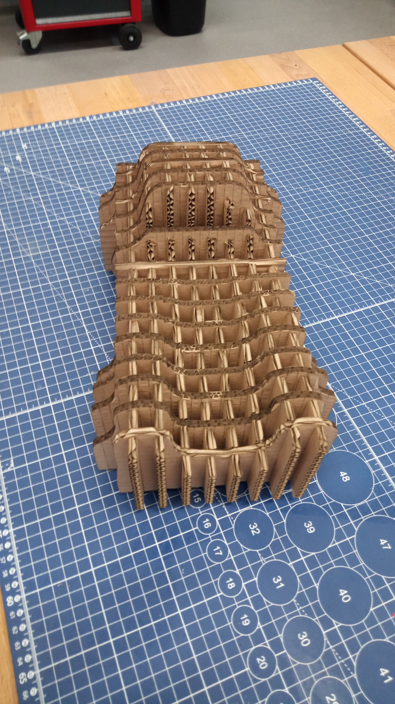
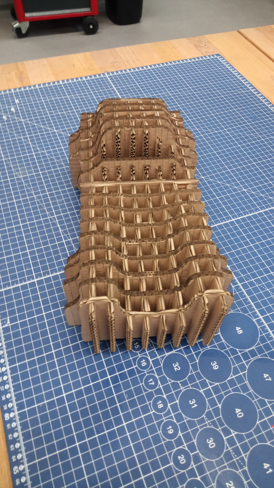

Návrh loga
PrvnÃm úkolem bylo vytvořit návrh loga. Použil jsem svoje iniciály a spojil je dohromady v jeden celek.
PrvnÃm úkolem bylo vytvořit návrh loga. Použil jsem svoje iniciály a spojil je dohromady v jeden celek.
Zde bylo vyřezáno logo do fólie na plotru, následně odlepeno od zbytku fólie a nalepeno na moji nabÃječku na notebook.


Po zaškolenà na plotter jsem jej využil pro dokončenà reklamnÃho modelu Pneuracer pro ukázky na veletrzÃch a jiných školnÃch akcÃch. Byl zde použit opačný postup než u předchozÃho loga – na plotru jsem vyřezal loga sponzorů SMC, Strojlabu, Ústavu konstruovánÃ, Fakulty strojnÃho inženýrstvà a našeho loga Pneuracer. Následně jsem vyloupal vnitřnà části a zbytek použil jako maskovánà na karoserii pro nalakovánà nápisů barvou kvůli futurističtějÅ¡Ãmu vzhledu.
Na základě vlastnÃho návrhu byl v programu SolidWorks vytvořen 3D model konstrukce (viz obr. 1). Model byl navržen dle vlastnà fantazie s ohledem na následnou výrobu z kartonového materiálu.

Po dokončenà návrhu byl model rozdělen na jednotlivé konstrukčnà dÃly určené k výpalu na laserové řezačce. Nejprve byly vytvořeny podélné dÃly, následně pÅ™ÃÄné dÃly (viz obr. 2 a 3). Aby bylo možné jednotlivé prvky přesně sestavit, byly do modelu doplněny zámky, které zajiÅ¡Å¥ujà vzájemnou polohu dÃlů.


Hotový CAD model byl následně převeden do 2D formátu DXF, který sloužà jako podklad pro pÅ™Ãpravu dat pro laserové řezánÃ. DXF soubory byly importovány do programu Inkscape (viz obr. 4), kde byly optimalizovány pro výřez z kartonové desky a rozmÃstěny tak, aby bylo dosaženo co nejefektivnějÅ¡Ãho využità materiálu. Z tohoto programu byla následně exportována data pro laserovou řezačku.

Prvnà pokus o řezánà neproběhl optimálně. Laser byl nastaven na maximálnà výkon 55 %, minimálnà výkon 50 % a rychlost posuvu 55 mm/s. Tyto parametry se ukázaly jako nedostatečné, neboť u části dÃlů nedošlo k úplnému prořezu materiálu a některé bylo nutné dodatečně dořezávat ručně.

Zámky o Å¡ÃÅ™ce 5 mm fungovaly velmi dobře v pÅ™Ãpadech, kdy do jednoho dÃlu byly zasazeny maximálně čtyři dalÅ¡Ã dÃly vedle sebe. V mém návrhu však bylo nutné vložit až šestnáct pÅ™ÃÄných dÃlů, což vedlo k deformaci a prohnutà podélných dÃlů (viz obr. model 1).


Z toho důvodu byl proveden druhý pokus s upravenými parametry laseru — maximálnà výkon 70 %, minimálnà výkon 65 % a rychlost 55 mm/s. Při těchto hodnotách se podařilo jednotlivé dÃly zcela oddělit bez nutnosti dodatečných úprav. Výsledné výřezy byly také estetičtějÅ¡Ã a přesnějÅ¡Ã (viz obr. vypálené dÃly).
 

DÃky drobným úpravám zámků, které nynà umožňovaly větÅ¡Ã vůli mezi spoji, bylo sestavenà modelu výrazně snazÅ¡Ã. Celkový výsledek je patrný na obr. XY, kde je zobrazen kompletně sestavený kartonový model.